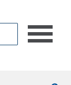
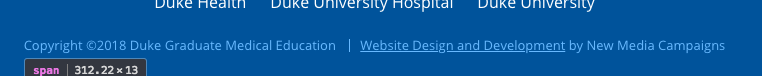
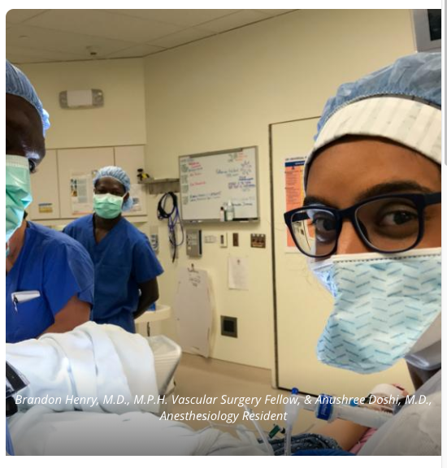

https://gme.duke.edu/
Screenshot:
/Applications/Google\ Chrome.app/Contents/MacOS/Google\ Chrome --headless --disable-gpu --screenshot --window-size=1400,800 https://gme.duke.edu
Manual Test: Offscreen content is hidden from assistive technology
Description:
Offscreen content is hidden with display: none or aria-hidden=true. Learn more.
Issues: 1. The main menu hamburger button is not focusable because <a> elements with no href attribute cannot receive focus. 2. When a screen reader comes across this link it will only say "nav". Since this is the only way to navigate the website we should add some screen reader only text to indicate its purpose. 3. When a user tabs through the website, the keyboard focus indicator gets lost inside the the off-screen main menu.
Visual location:

HTML location:
<a id="navtoggle">
<span class="n">n</span>
<span class="a">a</span>
<span class="v">v</span>
</a>Truly hide the menu when it is intended to be off-screen. Add correct ARIA attributes and states. Make the button keyboard and screen reader focusable.
Just paste this in the JS anywhere after the menu is initialized:
var $navToggle = jQuery('#navtoggle');
var $navContent = jQuery('#primary-nav > div');
$navToggle.prepend('<span class="element-invisible">Main menu toggle</span>');
$navContent.hide();
$navToggle.attr({
'href': '#',
'aria-expanded': 'false',
'aria-haspopup': 'true',
'aria-label': 'toggle main navigation'
});
$navToggle.on('click', function() {
if (jQuery('html').hasClass('nav-open')) {
jQuery(this).attr('aria-expanded','true');
$navContent.show();
} else {
jQuery(this).attr('aria-expanded','false');
$navContent.hide();
}
});Optionally, the hamburger could start with the prepended html and the ARIA attributes indicated with the JS above.
When a button doesn't have an accessible name, screen readers announce it as "button", making it unusable for users who rely on screen readers. Learn more.
button has no value attribute and it contains no inner text to indicate its purpose [Priority]Visual location:
<button type="submit" class="button-submit">
<svg>
<path></path>
</svg>
</button>There are many simple ways to fix this issue. Choose one of the following:
Option 1:
Add value="search" to the button element.
<button type="submit" class="button-submit" value="Search">
<svg>
<path></path>
</svg>
</button>Note: It must be the first child of it’s parent element.
Option 2:
Add screen reader only text <span class="element-invisible">Search</span>:
<button type="submit" class="button-submit">
+ <span class="element-invisible">Search</span>
<svg>
<path></path>
</svg>
</button>
Additional debugging details
Selector:
1,HTML,1,BODY,3,SECTION,0,FORM,1,BUTTON
Path:
button
More detailed explanation:
Fix all of the following:
Element is in tab order and does not have accessible text
Fix any of the following:
Element has a value attribute and the value attribute is empty
Element has no value attribute or the value attribute is empty
Element does not have inner text that is visible to screen readers
aria-label attribute does not exist or is empty
aria-labelledby attribute does not exist, references elements that do not exist or references elements that are empty or not visible
Element's default semantics were not overridden with role="presentation"
Element's default semantics were not overridden with role="none"
Manual Test: Headings don't skip levels
Description:
Headings are used to create an outline for the page and heading levels are not skipped. Learn more.
<h1>Pages should have one <h1> for accessibility, it also helps with search engine optimization if the <h1> has text in it.
Change <div id="logo"> to <h1 id="logo">.
the <h1> will cause an unwanted margin below the logo. I suggest adding margin: 0 to the #logo so it looks the same as when we started.
The website could just wrap the logo in an <h1> instead.
Everything else looks good!
Link text (and alternate text for images, when used as links) that is discernible, unique, and focusable improves the navigation experience for screen reader users. Learn more.
<a> link has no text inside.Visual location:

HTML Location:
<a href="/" class="logo-link">Empty links are not read to a screen reader user, as a result, they will no know what the link does or where it would take them.
Add screen reader only text inside link.
<a href="/" class="logo-link">
<span class="desktop-only">
<svg viewBox="0 0 697 67"></svg>
</span>
<span class="element-invisible">Duke Health Graduate Medical Education</span>
</a>
Additional debugging details
Selector:
1,HTML,1,BODY,1,HEADER,0,DIV,0,DIV,0,A
Path:
.logo-link
More detailed explanation:
Fix all of the following:
Element is in tab order and does not have accessible text
Fix any of the following:
Element does not have text that is visible to screen readers
aria-label attribute does not exist or is empty
aria-labelledby attribute does not exist, references elements that do not exist or references elements that are empty or not visible
Element's default semantics were not overridden with role="presentation"
Element's default semantics were not overridden with role="none"
Manual Test: HTML5 landmark elements are used to improve navigation
Description:
Landmark elements (<main>, <nav>, etc.) are used to improve the keyboard navigation of the page for assistive technology. Learn more.
<main> elementThe website has a <header> and a <footer>. We just need to add a <main> element. It allows the screen reader user to skip to the main content area.
Wrap the <section> elements in one <main> element.
+ <main>
<div class="bound-layout"></div>
<section class="home-intro"></section>
<section class="home-content"></section>
<section class="module module-image-banner module-image-banner-left" style="background-image: url(https://gme.duke.edu/sites/gme.duke.edu/files/styles/masthead/public/life-in-durham-2.jpg?itok=uHEngSP5);"></section>
<section class="module module-image-banner module-image-banner-left" style="background-image: url(https://gme.duke.edu/sites/gme.duke.edu/files/styles/masthead/public/default-banner-min.jpg?itok=_Lo9Syer);"></section>
+ </main>Everything else looks good!
Labels ensure that form controls are announced properly by assistive technologies, like screen readers. Learn more.
Visual location:

HTML location:
<input type="search" name="keyword" class="input-search" placeholder="Search">Add <label for="something"> to associate the label with that form field. If the element does not have and ID attribute to associate add id="something".
If you wish to visually hide the label add class .element-invisible to the <label>.
Additional debugging details
Selector:
1,HTML,1,BODY,3,SECTION,0,FORM,0,INPUT
Path:
input
More detailed explanation:
Fix any of the following:
aria-label attribute does not exist or is empty
aria-labelledby attribute does not exist, references elements that do not exist or references elements that are empty or not visible
Form element does not have an implicit (wrapped) <label>
Form element does not have an explicit <label>
Element has no title attribute or the title attribute is empty
[user-scalable="no"] is used in the <meta name="viewport"> element or the [maximum-scale] attribute is less than 5.Disabling zooming is problematic for users with low vision who rely on screen magnification to properly see the contents of a web page. Learn more.
HTML location:
<meta name="viewport" id="viewport" content="width=device-width,minimum-scale=1.0,maximum-scale=1.0,initial-scale=1.0">Option 1:
In Drupal this can also be done in the template.php file with something similar to this (‘alpha-viewport’ $head_element name varies depending on the base theme):
$head_elements['alpha-viewport'] = array(
'#type' => 'html_tag',
'#tag' => 'meta',
'#attributes' => array(
'name' => 'viewport',
'content' => 'width=device-width, initial-scale=1, maximum-scale=5, minimum-scale=1, user-scalable=yes',
),
);
Option 2:
Go into the html.tpl.php file and change it there.
Changing the maximum scale to 5 will allow people to scale the page. Depending on how the website is styled, it could cause unexpected issues with the mobile view of the site getting a horizontal scrollbar. It is worth testing to ensure that does not happen.
<meta name="viewport" content="width=device-width, initial-scale=1, maximum-scale=5" user-scalable="yes">
Additional debugging details
Selector:
1,HTML,0,HEAD,16,META
Path:
#viewport
More detailed explanation:
Fix any of the following:
<meta> tag disables zooming on mobile devices
Low-contrast text is difficult or impossible for many users to read. Learn more.
This is a false positive, but false positives have been used in litigation to support claims of inaccessible websites, because lawyers don't understand this stuff. So, we must fix it anyway.
Visual location:
HTML location:
<a id="navtoggle">
<span class="n">n</span>
<span class="a">a</span>
<span class="v">v</span>
</a>Element has insufficient color contrast of 1.14 (foreground color: #00539b, background color: #494a4d, font size: 0.0pt, font weight: normal). Expected contrast ratio of 4.5:1
Add color to existing selector:
#navtoggle > span {
+ color: #fff;
display: block;
...
}Visually, it will be the same, but it will not throw the error anymore.
Additional debugging details
Selector:
1,HTML,1,BODY,1,HEADER,0,DIV,2,A,1,SPAN
More detailed explanation:
Fix any of the following:
Element has insufficient color contrast of 1.14 (foreground color: #00539b, background color: #494a4d, font size: 0.0pt, font weight: normal). Expected contrast ratio of 4.5:1
Visual location:

HTML location:
<span>Copyright ©2018 Duke Graduate Medical Education</span><span>
<a href="http://newmediacampaigns.com" target="_blank">
Website Design and Development
</a>
by New Media Campaigns
</span>Element has insufficient color contrast of 3.67 (foreground color: #68b9ff, background color: #00539b, font size: 9.8pt, font weight: normal). Expected contrast ratio of 4.5:1
Change text color to closest compliant color.
Current color: https://webaim.org/resources/contrastchecker/?fcolor=68B9FF&bcolor=00539B
Closest compliant color: https://webaim.org/resources/contrastchecker/?fcolor=94CDFF&bcolor=00539B
.footer-copy {
clear: both;
text-align: center;
font-size: 13px;
line-height: 1;
- color: #68b9ff;
+ color: 94CDFF
}
Additional debugging details
Selector:
1,HTML,1,BODY,7,FOOTER,0,DIV,2,P,0,SPAN
Path:
.footer-copy > span:nth-child(1)
More detailed explanation:
Fix any of the following:
Element has insufficient color contrast of 3.67 (foreground color: #68b9ff, background color: #00539b, font size: 9.8pt, font weight: normal). Expected contrast ratio of 4.5:1
Visual location:

HTML location:
<a href="http://newmediacampaigns.com" target="_blank">Website Design and Development</a>Element has insufficient color contrast of 3.67 (foreground color: #68b9ff, background color: #00539b, font size: 9.8pt, font weight: normal). Expected contrast ratio of 4.5:1
Change text color to closest compliant color.
Current color: https://webaim.org/resources/contrastchecker/?fcolor=68B9FF&bcolor=00539B
Closest compliant color: https://webaim.org/resources/contrastchecker/?fcolor=94CDFF&bcolor=00539B
.footer-copy a {
- color: #68b9ff;
+ color: #94CDFF;
text-decoration: underline;
}
Additional debugging details
Selector:
1,HTML,1,BODY,7,FOOTER,0,DIV,2,P,1,SPAN,0,A
Path:
a[href$="newmediacampaigns.com"]
More detailed explanation:
Fix any of the following:
Element has insufficient color contrast of 3.67 (foreground color: #68b9ff, background color: #00539b, font size: 9.8pt, font weight: normal). Expected contrast ratio of 4.5:1
Manual Test: The user's focus is directed to new content added to the page
Description:
If new content, such as a dialog, is added to the page, the user's focus is directed to it. Learn more.
Does not indicate that new content is added to the screen, but this will be fixed by the task "Main navigation is not keyboard or screen reader accessible" above.
Visual location:

HTML location:
<div class="home-image home-image-3" style="background-image: url(https://gme.duke.edu/sites/gme.duke.edu/files/styles/home_big/public/henry-doshi-md2.jpg?itok=0fnQYg1X);">
<div class="caption">
Brandon Henry, M.D., M.P.H. Vascular Surgery Fellow, & Anushree Doshi, M.D., Anesthesiology Resident
</div>
</div>I'm not sure what to do with this. Its technically a violation, but any fix we do on it would cause other accessibility problems, so ideally it should not be hidden, but its a low priority issue.
There is also a contrast issue on the text here. It is illegible.
Visual location:

Add text-shadow to existing selector.
.home-intro .home-image .caption {
+ text-shadow: 1px 0px 1px #000, 1px 1px 3px #000, -1px -1px 4px #000, 0px 0px 8px #000;
position: absolute;
left: 0;
bottom: 0;
z-index: 9;
...
}That contrast fix makes the faux hidden text visible when it was 'hidden'. So we need to hide the overflow overflow.
Add overflow: hidden to new selector.
.home-intro .home-image {
+ overflow: hidden;
}Result:
Link text with the words "Learn more" is not discriptive. The screen reader will reade "Learn more" to screen reader users. As a result, they will not know what the link does or where it will take them.
HTML location:
<a href="/about/directors-welcome" class="btn bigger">
Learn More
</a>Visual location:
Or add screen reader only text inside the link.
Example:
<a href="/about/directors-welcome" class="btn bigger">
Learn More
<span class="element-invisible"> about G M E</span>
</a>IMPORTANT NOTE: This rule applies to every "Learn more" link on the website.
This is a major issue when outside entities audit our websites for compliance. They catch it every time.
Manual Test: Visual order on the page follows DOM order
Description:
DOM order matches the visual order, improving navigation for assistive technology. Learn more.
Textise is a neat tool for inspecting the natural order View this website on Textise of the website. If nothing has been done in JS to interfere the natural tab order, looking at that or viewing the source will basically follow the order of the markup.
Looks good!
Custom controls have ARIA roles
Description:
Custom interactive controls have appropriate ARIA roles. Learn more.
Not applicable.
Manual Test: The page has a logical tab order
Description:
Tabbing through the page follows the visual layout. Users cannot focus elements that are offscreen. Learn more.
Looks good!
Site works cross-browser
Description:
To reach the most number of users, sites should work across every major browser. Learn more.
Looks good!
Manual Test: User focus is not accidentally trapped in a region
Description:
A user can tab into and out of any control or region without accidentally trapping their focus. Learn more.
Looks good!
Manual Test: Interactive controls are keyboard focusable
Description:
Custom interactive controls are keyboard focusable and display a focus indicator. Learn more.
Not applicable.
This report was partially generated by the aXe Acccessibility Engine, Lighthouse, and the WAVE browser extention.